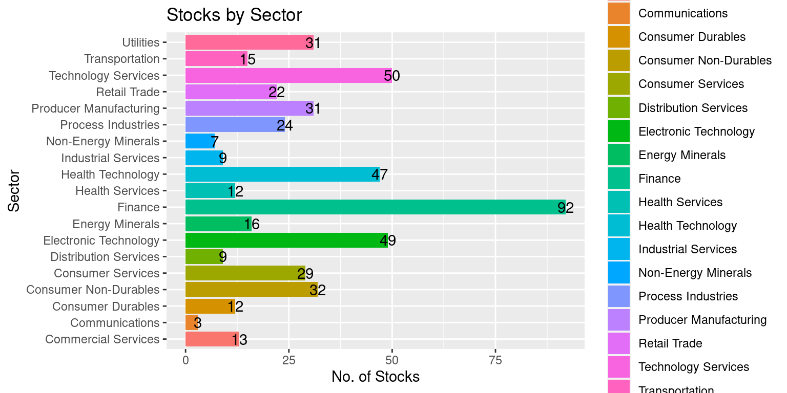
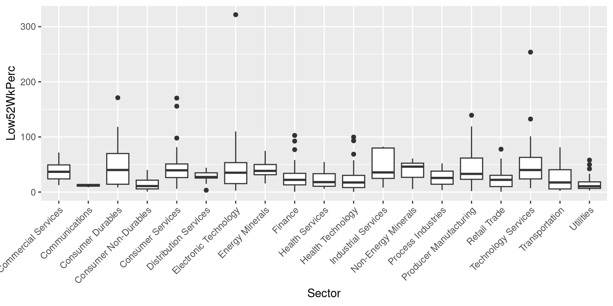
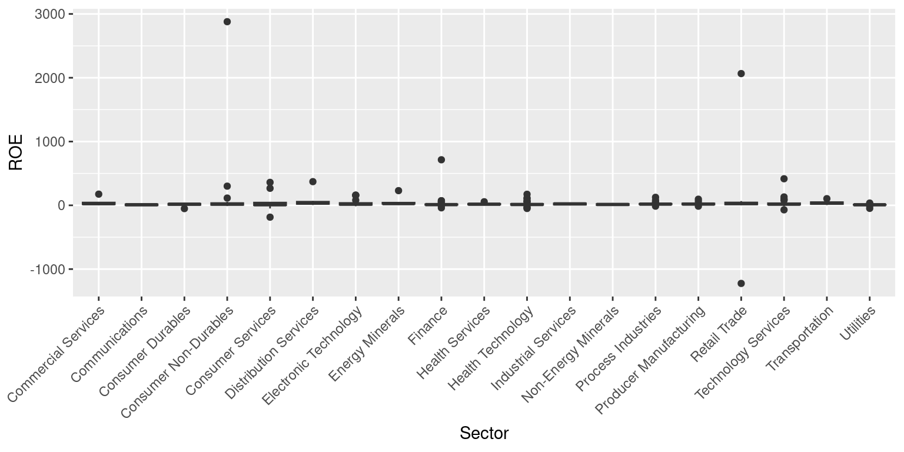
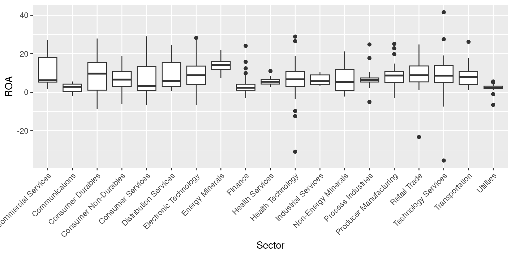
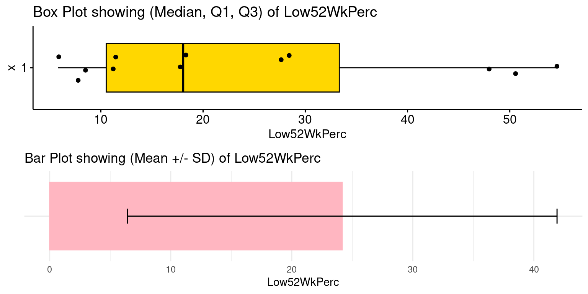
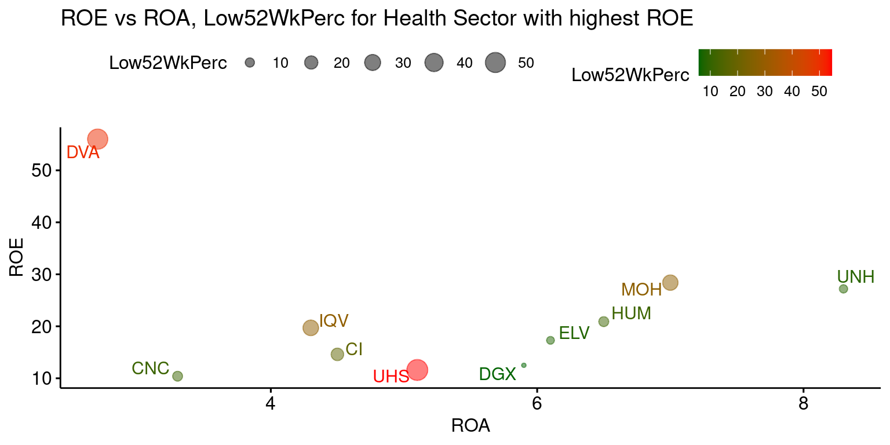

# Load the required libraries, suppressing annoying startup messages
library(dplyr, quietly = TRUE, warn.conflicts = FALSE)
library(tibble, quietly = TRUE, warn.conflicts = FALSE)
library(ggplot2, quietly = TRUE, warn.conflicts = FALSE) # For data visualization
library(ggpubr, quietly = TRUE, warn.conflicts = FALSE) # For data visualization
library(gsheet, quietly = TRUE, warn.conflicts = FALSE)
library(rmarkdown, quietly = TRUE, warn.conflicts = FALSE)
library(knitr, quietly = TRUE, warn.conflicts = FALSE)
library(kableExtra, quietly = TRUE, warn.conflicts = FALSE) Live Case: S&P500 (2 of 3)
Aug 7, 2023
ISSUE: Understanding the S&P500 as a whole Aug 06, 2023 -=- This chapter is being heavily edited
S&P 500 Data - PRELIMINARY SETUP
- We will continue our analysis of the S&P 500. Load the data, as described in the chapter Live Case: S&P500 (1 of 3)
# Read S&P500 stock data present in a Google Sheet.
library(gsheet)
prefix <- "https://docs.google.com/spreadsheets/d/"
sheetID <- "11ahk9uWxBkDqrhNm7qYmiTwrlSC53N1zvXYfv7ttOCM"
url500 <- paste(prefix,sheetID) # Form the URL to connect to
sp500 <- gsheet2tbl(url500) # Read it into a tibble called sp500- Rename columns, as described in the chapter Live Case: S&P500 (1 of 3).
suppressPackageStartupMessages(library(dplyr))
# Define a mapping of new column names
new_names <- c(
"Date", "Stock", "StockName", "Sector", "Industry",
"MarketCap", "Price", "Low52Wk", "High52Wk",
"ROE", "ROA", "ROIC", "GrossMargin",
"OperatingMargin", "NetMargin", "PE",
"PB", "EVEBITDA", "EBITDA", "EPS",
"EBITDA_YOY", "EBITDA_QYOY", "EPS_YOY",
"EPS_QYOY", "PFCF", "FCF",
"FCF_QYOY", "DebtToEquity", "CurrentRatio",
"QuickRatio", "DividendYield",
"DividendsPerShare_YOY", "PS",
"Revenue_YOY", "Revenue_QYOY", "Rating"
)
# Rename the columns using the new_names vector
sp500 <- sp500 %>%
rename_with(~ new_names, everything())- Remove Rows containing no data or Null values, as described in the chapter Live Case: S&P500 (1 of 3).
# Check for blank or null values in the "Stock" column
hasNull <- any(sp500$Stock == "" | is.null(sp500$Stock))
if (hasNull) {
# Remove rows with null or blank values from the dataframe tibble
sp500 <- sp500[!(is.null(sp500$Stock) | sp500$Stock == ""), ]
}- The S&P500 shares are divided into multiple Sectors. Thus, model Sector as a factor() variable, as described in the chapter Live Case: S&P500 (1 of 3).
sp500$Sector <- as.factor(sp500$Sector)- Stock Ratings: The S&P500 shares have Technical Ratings such as {Buy, Sell, ..}. Model the data column Rating as a factor() variable, as described in the chapter Live Case: S&P500 (1 of 3).
sp500$Rating <- as.factor(sp500$Rating)- Low52WkPerc: Create a new column to track Share Prices relative to their 52 Week Low, as described in the chapter Live Case: S&P500 (1 of 3).
sp500 <- sp500 %>% mutate(Low52WkPerc = round((Price - Low52Wk)*100 / Low52Wk,2))
colnames(sp500) [1] "Date" "Stock" "StockName"
[4] "Sector" "Industry" "MarketCap"
[7] "Price" "Low52Wk" "High52Wk"
[10] "ROE" "ROA" "ROIC"
[13] "GrossMargin" "OperatingMargin" "NetMargin"
[16] "PE" "PB" "EVEBITDA"
[19] "EBITDA" "EPS" "EBITDA_YOY"
[22] "EBITDA_QYOY" "EPS_YOY" "EPS_QYOY"
[25] "PFCF" "FCF" "FCF_QYOY"
[28] "DebtToEquity" "CurrentRatio" "QuickRatio"
[31] "DividendYield" "DividendsPerShare_YOY" "PS"
[34] "Revenue_YOY" "Revenue_QYOY" "Rating"
[37] "Low52WkPerc" Well done! Our data is now ready for analysis!!
- Low52WkPerc: Create a new column MarketCapBillions = MarketCap/1000,000,000, as described in the chapter Live Case: S&P500 (1 of 3).
sp500 <- sp500 %>% mutate(MarketCapBillions = round(MarketCap/1000000000))
colnames(sp500) [1] "Date" "Stock" "StockName"
[4] "Sector" "Industry" "MarketCap"
[7] "Price" "Low52Wk" "High52Wk"
[10] "ROE" "ROA" "ROIC"
[13] "GrossMargin" "OperatingMargin" "NetMargin"
[16] "PE" "PB" "EVEBITDA"
[19] "EBITDA" "EPS" "EBITDA_YOY"
[22] "EBITDA_QYOY" "EPS_YOY" "EPS_QYOY"
[25] "PFCF" "FCF" "FCF_QYOY"
[28] "DebtToEquity" "CurrentRatio" "QuickRatio"
[31] "DividendYield" "DividendsPerShare_YOY" "PS"
[34] "Revenue_YOY" "Revenue_QYOY" "Rating"
[37] "Low52WkPerc" "MarketCapBillions" ANALYSIS OF S&P500 SECTORS
- The table() function allows us to count how many stocks are part of each sector.
tab<- addmargins(table(sp500$Sector))
kable(tab)| Var1 | Freq |
|---|---|
| Commercial Services | 13 |
| Communications | 3 |
| Consumer Durables | 12 |
| Consumer Non-Durables | 32 |
| Consumer Services | 29 |
| Distribution Services | 9 |
| Electronic Technology | 49 |
| Energy Minerals | 16 |
| Finance | 92 |
| Health Services | 12 |
| Health Technology | 47 |
| Industrial Services | 9 |
| Non-Energy Minerals | 7 |
| Process Industries | 24 |
| Producer Manufacturing | 31 |
| Retail Trade | 22 |
| Technology Services | 50 |
| Transportation | 15 |
| Utilities | 31 |
| Sum | 503 |
- The S&P500 consists of 503 stocks, divided across 19 sectors.
ggplot(data = sp500,
aes(y = Sector)) +
geom_bar(aes(fill = Sector)) +
geom_text(stat='count',
aes(label=after_stat(count))) +
labs(title = "Stocks by Sector",
x = "No. of Stocks",
y = "Sector")
- Numbers of shares by Rating
tab<- addmargins(table(sp500$Rating))
kable(tab)| Var1 | Freq |
|---|---|
| Buy | 133 |
| Neutral | 36 |
| Sell | 146 |
| Strong Buy | 158 |
| Strong Sell | 30 |
| Sum | 503 |
- Pie Chart Showing Proportion of shares by Rating
library(ggpubr)
# Compute counts and proportions of each cylinder type
Rating_counts <- as.data.frame(table(sp500$Rating))
colnames(Rating_counts) <- c("Rating", "n")
# Calculate proportions
Rating_counts$prop <- Rating_counts$n / sum(Rating_counts$n)
# Create labels that display proportions as percentages
Rating_counts$labels <- paste0(round(Rating_counts$prop*100, 2), "%")
# Create the pie chart with proportions
ggpie(data = Rating_counts,
x = "prop",
fill = "Rating",
label = "labels",
palette = "jco",
title = "Pie Chart of Rating")
- Count Shares by Sector*Rating
tab<- addmargins(table(Sector = sp500$Sector, Rating = sp500$Rating))
kable(tab)| Buy | Neutral | Sell | Strong Buy | Strong Sell | Sum | |
|---|---|---|---|---|---|---|
| Commercial Services | 4 | 1 | 5 | 3 | 0 | 13 |
| Communications | 1 | 1 | 0 | 0 | 1 | 3 |
| Consumer Durables | 4 | 0 | 3 | 4 | 1 | 12 |
| Consumer Non-Durables | 4 | 2 | 15 | 10 | 1 | 32 |
| Consumer Services | 7 | 5 | 7 | 8 | 2 | 29 |
| Distribution Services | 3 | 0 | 2 | 4 | 0 | 9 |
| Electronic Technology | 13 | 1 | 16 | 17 | 2 | 49 |
| Energy Minerals | 7 | 1 | 1 | 5 | 2 | 16 |
| Finance | 27 | 6 | 24 | 34 | 1 | 92 |
| Health Services | 4 | 0 | 4 | 3 | 1 | 12 |
| Health Technology | 9 | 3 | 24 | 6 | 5 | 47 |
| Industrial Services | 1 | 0 | 1 | 7 | 0 | 9 |
| Non-Energy Minerals | 3 | 1 | 1 | 2 | 0 | 7 |
| Process Industries | 6 | 4 | 9 | 4 | 1 | 24 |
| Producer Manufacturing | 8 | 0 | 4 | 18 | 1 | 31 |
| Retail Trade | 8 | 3 | 5 | 6 | 0 | 22 |
| Technology Services | 11 | 4 | 20 | 7 | 8 | 50 |
| Transportation | 6 | 2 | 2 | 2 | 3 | 15 |
| Utilities | 7 | 2 | 3 | 18 | 1 | 31 |
| Sum | 133 | 36 | 146 | 158 | 30 | 503 |
MARKET CAP
TODO: Work in Billions; 1. Market Cap of all companies by Sector
library(janitor) # This package helps us auto generate the total at the bottom of a table.
library(kableExtra)
# Market Cap by Sector
MCap <- sp500 %>%
group_by(Sector) %>%
summarise(
MarketCapCr = sum(na.omit(MarketCap)/10000000))
# Total Market Cap of the entire S&P 500 (in Millions)
SP500MarketCap <- sum(sp500$MarketCap/10000000)
# calculating % market cap
PercentMarketCap <- round(MCap$MarketCapCr*100/SP500MarketCap,2)
MCapTab <- cbind(MCap,PercentMarketCap)
# sorting by PercentMarketCap
MCapTab <- MCapTab %>% arrange(desc(PercentMarketCap))
# Use package janitor to add sums at the bottom of the table
MCapTab <- MCapTab %>%
adorn_totals("row")
# Use package knittr to format the appearance of the table
MCapTab <- knitr::kable(MCapTab, "html") %>% kable_styling()
MCapTab | Sector | MarketCapCr | PercentMarketCap |
|---|---|---|
| Technology Services | 977771.00 | 23.38 |
| Electronic Technology | 657795.29 | 15.73 |
| Finance | 487711.71 | 11.66 |
| Health Technology | 392561.17 | 9.38 |
| Retail Trade | 324468.26 | 7.76 |
| Consumer Non-Durables | 207586.48 | 4.96 |
| Energy Minerals | 148491.47 | 3.55 |
| Consumer Services | 139457.83 | 3.33 |
| Producer Manufacturing | 136313.77 | 3.26 |
| Commercial Services | 130902.32 | 3.13 |
| Consumer Durables | 114063.38 | 2.73 |
| Utilities | 97714.24 | 2.34 |
| Health Services | 91056.18 | 2.18 |
| Process Industries | 78141.93 | 1.87 |
| Transportation | 64189.17 | 1.53 |
| Communications | 41914.50 | 1.00 |
| Industrial Services | 41597.39 | 0.99 |
| Distribution Services | 30238.98 | 0.72 |
| Non-Energy Minerals | 20935.45 | 0.50 |
| Total | 4182910.54 | 100.00 |
TODO: Work in Billions; Show “Sum”, “Median”, “Mean” Delete Q1, Q3 all others 2. Summary Statistics of Market Cap (in Cr of USD) by each Sector of S&P500
SectorMC <- sp500 %>%
group_by(Sector) %>%
summarise(
Mean = mean(na.omit(MarketCap/10000000)),
Median= sd(na.omit(MarketCap/10000000)),
Median= median(na.omit(MarketCap/10000000)),
Q1 = quantile(na.omit(MarketCap/10000000), probs = 0.25, na.rm = TRUE),
Q3 = quantile(na.omit(MarketCap/10000000), probs = 0.75, na.rm = TRUE),
Min = min(na.omit(MarketCap/10000000)),
max = max(na.omit(MarketCap/10000000))
)
tab <- cbind(Sector = SectorMC$Sector, round(SectorMC[,2:7],2))
SMcap <- knitr::kable(tab, "html") %>% kable_styling()
SMcap | Sector | Mean | Median | Q1 | Q3 | Min | max |
|---|---|---|---|---|---|---|
| Commercial Services | 10069.41 | 3267.60 | 1548.76 | 7075.75 | 799.37 | 49231.40 |
| Communications | 13971.50 | 14310.60 | 12538.50 | 15574.05 | 10766.40 | 16837.50 |
| Consumer Durables | 9505.28 | 1874.35 | 1345.57 | 4080.71 | 748.59 | 87614.90 |
| Consumer Non-Durables | 6487.08 | 4002.33 | 1828.88 | 5986.15 | 704.24 | 36477.60 |
| Consumer Services | 4808.89 | 1956.52 | 1459.00 | 5360.23 | 735.13 | 20752.30 |
| Distribution Services | 3359.89 | 3132.05 | 2109.38 | 3554.92 | 972.20 | 7748.67 |
| Electronic Technology | 13424.39 | 4055.77 | 1890.92 | 7863.17 | 848.90 | 274756.00 |
| Energy Minerals | 9280.72 | 5314.84 | 2656.84 | 6644.05 | 1320.63 | 47445.80 |
| Finance | 5301.21 | 2499.88 | 1585.23 | 5005.07 | 436.14 | 80651.20 |
| Health Services | 7588.02 | 3780.36 | 1710.52 | 7473.15 | 792.41 | 44796.10 |
| Health Technology | 8352.37 | 3361.24 | 1728.29 | 10788.55 | 505.77 | 56161.20 |
| Industrial Services | 4621.93 | 3856.95 | 3703.41 | 4758.81 | 2944.49 | 8754.51 |
| Non-Energy Minerals | 2990.78 | 2856.22 | 2195.89 | 3629.07 | 597.27 | 5832.03 |
| Process Industries | 3255.91 | 1696.74 | 1339.25 | 3750.41 | 511.36 | 19020.10 |
| Producer Manufacturing | 4397.22 | 3357.60 | 1291.95 | 5361.67 | 402.60 | 14414.60 |
| Retail Trade | 14748.56 | 3637.82 | 2122.68 | 10276.64 | 705.74 | 148488.00 |
| Technology Services | 19555.42 | 3462.30 | 1676.70 | 11599.22 | 424.51 | 251646.00 |
| Transportation | 4279.28 | 2530.56 | 1606.72 | 5458.89 | 500.76 | 13746.80 |
| Utilities | 3152.07 | 2249.51 | 1778.34 | 3607.82 | 891.77 | 14209.70 |
- Top 10 companies having highest Market Cap
Top10 <- sp500 %>% arrange(desc(MarketCap)) %>% head(10)
Top10 <- Top10[,c(1:4, 6,10:13)]
Top10 <- knitr::kable(Top10, "html") %>% kable_styling()
Top10 | Date | Stock | StockName | Sector | MarketCap | ROE | ROA | ROIC | GrossMargin |
|---|---|---|---|---|---|---|---|---|
| 9/22/2023 | AAPL | Apple Inc. | Electronic Technology | 2.74756e+12 | 160.1 | 28.2 | 60.9 | 43.4 |
| 9/22/2023 | MSFT | Microsoft Corporation | Technology Services | 2.51646e+12 | 38.8 | 18.6 | 28.1 | 68.9 |
| 9/22/2023 | GOOG | Alphabet Inc. | Technology Services | 1.74660e+12 | 23.3 | 16.5 | 21.2 | 55.4 |
| 9/22/2023 | GOOGL | Alphabet Inc. | Technology Services | 1.74660e+12 | 23.3 | 16.5 | 21.2 | 55.4 |
| 9/22/2023 | AMZN | Amazon.com, Inc. | Retail Trade | 1.48488e+12 | 8.7 | 2.9 | 4.6 | 45.5 |
| 9/22/2023 | NVDA | NVIDIA Corporation | Electronic Technology | 1.12585e+12 | 40.2 | 22.2 | 29.0 | 64.6 |
| 9/22/2023 | TSLA | Tesla, Inc. | Consumer Durables | 8.76149e+11 | 28.0 | 15.4 | 25.5 | 21.5 |
| 9/22/2023 | BRK.B | Berkshire Hathaway Inc. New | Finance | 8.06512e+11 | 17.4 | 8.9 | 13.9 | 19.2 |
| 9/22/2023 | META | Meta Platforms, Inc. | Technology Services | 8.02237e+11 | 17.4 | 12.0 | 14.5 | 79.4 |
| 9/22/2023 | LLY | Eli Lilly and Company | Health Technology | 5.61612e+11 | 66.3 | 12.8 | 24.8 | 77.8 |
PRICE RELATIVE TO 52 WEEK LOW
- Summary Statistics of Low52WkPerc by Sector
SM <- sp500 %>%
group_by(Sector) %>%
summarise(
Mean = mean(na.omit(Low52WkPerc)),
Median= sd(na.omit(Low52WkPerc)),
Median= median(na.omit(Low52WkPerc)),
Q1 = quantile(na.omit(Low52WkPerc), probs = 0.25, na.rm = TRUE),
Q3 = quantile(na.omit(Low52WkPerc), probs = 0.75, na.rm = TRUE),
Min = min(na.omit(Low52WkPerc)),
Max = max(na.omit(Low52WkPerc))
)
tab <- cbind(Sector = SM$Sector, round(SM[,2:7],2))
tab <- tab %>% arrange(Median)
SM <- knitr::kable(tab, "html") %>% kable_styling()
SM | Sector | Mean | Median | Q1 | Q3 | Min | Max |
|---|---|---|---|---|---|---|
| Utilities | 16.42 | 10.50 | 6.69 | 18.53 | 2.96 | 58.01 |
| Consumer Non-Durables | 14.79 | 10.88 | 5.75 | 21.57 | 0.87 | 40.02 |
| Communications | 11.96 | 12.69 | 10.66 | 13.63 | 8.63 | 14.57 |
| Health Technology | 24.51 | 17.41 | 8.19 | 30.27 | 0.34 | 99.76 |
| Transportation | 25.10 | 17.42 | 5.72 | 40.53 | 2.11 | 81.11 |
| Health Services | 24.17 | 18.05 | 10.53 | 33.33 | 5.81 | 54.55 |
| Finance | 25.46 | 22.15 | 13.07 | 33.97 | 0.55 | 102.73 |
| Retail Trade | 24.93 | 22.20 | 9.98 | 30.38 | 0.60 | 77.76 |
| Process Industries | 26.63 | 25.62 | 14.23 | 37.96 | 3.56 | 51.92 |
| Distribution Services | 27.54 | 27.29 | 25.40 | 34.92 | 3.37 | 44.12 |
| Producer Manufacturing | 44.69 | 32.95 | 23.12 | 61.69 | 1.76 | 139.34 |
| Electronic Technology | 44.70 | 35.11 | 15.35 | 53.44 | 2.58 | 321.74 |
| Industrial Services | 45.48 | 35.64 | 24.79 | 79.90 | 8.13 | 82.25 |
| Commercial Services | 37.54 | 36.78 | 23.90 | 49.26 | 12.57 | 71.65 |
| Energy Minerals | 40.83 | 38.41 | 31.45 | 49.98 | 15.68 | 74.72 |
| Consumer Services | 46.97 | 39.47 | 26.29 | 50.99 | 5.89 | 170.46 |
| Technology Services | 48.15 | 40.03 | 23.82 | 62.88 | 6.98 | 253.80 |
| Consumer Durables | 53.57 | 40.06 | 14.22 | 69.92 | 8.36 | 171.12 |
| Non-Energy Minerals | 38.67 | 46.13 | 26.74 | 52.44 | 5.33 | 60.84 |
Sector Communications and Utilities are closest to its 52 week low.
- Box Plot for Low52WkPerc by Sector TODO: Truncate at 100; Rotate by 90 degrees; Sort Sectors by Median(Low52WkPerc)
library(ggplot2)
ggplot(sp500, aes(Sector, Low52WkPerc)) + geom_boxplot() +
theme(axis.text.x = element_text(angle = 45, vjust = 1, hjust = 1))
PROFITABILITY BY SECTOR
ROE
- Summary Statistics of ROE by each Sector of S&P500
SectorROE <- sp500 %>%
group_by(Sector) %>%
summarise(
Mean = mean(na.omit(ROE)),
Median= sd(na.omit(ROE)),
Median= median(na.omit(ROE)),
Q1 = quantile(na.omit(ROE), probs = 0.25, na.rm = TRUE),
Q3 = quantile(na.omit(ROE), probs = 0.75, na.rm = TRUE),
Min = min(na.omit(ROE)),
max = max(na.omit(ROE))
)
cbind(Sector = SectorROE$Sector, round(SectorROE[,2:7],2)) Sector Mean Median Q1 Q3 Min max
1 Commercial Services 37.98 26.40 16.40 43.60 3.5 175.2
2 Communications 8.10 9.10 0.55 16.15 -8.0 23.2
3 Consumer Durables 12.42 17.75 6.85 25.38 -51.4 45.2
4 Consumer Non-Durables 129.60 19.60 6.40 34.60 -11.5 2878.8
5 Consumer Services 31.11 9.40 1.43 42.88 -185.6 359.9
6 Distribution Services 81.10 34.20 22.15 56.45 5.1 371.2
7 Electronic Technology 31.65 18.75 8.10 36.80 -14.8 160.1
8 Energy Minerals 43.12 26.95 23.78 41.45 18.0 230.2
9 Finance 21.52 10.95 7.62 16.67 -39.2 714.3
10 Health Services 20.63 17.30 12.05 24.05 8.3 56.0
11 Health Technology 19.87 13.10 6.80 22.73 -49.3 173.5
12 Industrial Services 21.04 22.60 10.70 31.10 7.7 36.5
13 Non-Energy Minerals 13.84 13.50 3.40 21.80 -3.8 36.8
14 Process Industries 25.72 18.60 15.35 24.62 -13.2 125.5
15 Producer Manufacturing 24.26 19.40 12.80 29.40 -13.6 95.9
16 Retail Trade 74.36 28.75 14.47 44.00 -1224.5 2065.3
17 Technology Services 33.28 18.00 10.70 32.65 -70.6 416.6
18 Transportation 36.34 33.50 20.85 49.08 4.1 104.4
19 Utilities 8.12 8.70 7.65 10.60 -47.6 35.5- Box Plot for ROE by Sector
library(ggplot2)
ggplot(sp500, aes(Sector, ROE)) + geom_boxplot() +
theme(axis.text.x = element_text(angle = 45, vjust = 1, hjust = 1))
ROA
- Summary Statistics of ROA by each Sector of S&P500
SectorROA <- sp500 %>%
group_by(Sector) %>%
summarise(
Mean = mean(na.omit(ROA)),
Median= sd(na.omit(ROA)),
Median= median(na.omit(ROA)),
Q1 = quantile(na.omit(ROA), probs = 0.25, na.rm = TRUE),
Q3 = quantile(na.omit(ROA), probs = 0.75, na.rm = TRUE),
Min = min(na.omit(ROA)),
max = max(na.omit(ROA))
)
cbind(Sector = SectorROA$Sector, round(SectorROA[,2:7],2)) Sector Mean Median Q1 Q3 Min max
1 Commercial Services 10.25 6.20 5.30 18.10 1.7 27.2
2 Communications 2.13 2.90 0.40 4.25 -2.1 5.6
3 Consumer Durables 8.75 9.70 1.13 15.53 -8.8 27.9
4 Consumer Non-Durables 7.15 6.60 3.10 10.75 -5.9 18.9
5 Consumer Services 6.38 3.20 0.80 13.30 -6.6 29.0
6 Distribution Services 9.79 5.90 2.90 15.50 0.6 24.5
7 Electronic Technology 9.46 8.80 3.90 13.60 -6.7 28.2
8 Energy Minerals 14.32 14.15 11.70 15.98 7.4 21.9
9 Finance 3.28 2.40 1.10 4.23 -2.9 24.1
10 Health Services 5.74 5.50 4.27 6.62 2.7 11.0
11 Health Technology 6.66 6.70 2.95 10.70 -30.8 28.9
12 Industrial Services 6.58 5.70 4.20 9.00 3.3 10.6
13 Non-Energy Minerals 7.10 5.20 1.05 11.70 -2.2 21.2
14 Process Industries 7.01 6.25 5.32 7.43 -5.0 24.8
15 Producer Manufacturing 9.02 8.70 5.15 10.90 -3.1 25.1
16 Retail Trade 8.84 8.80 5.38 13.65 -23.2 24.8
17 Technology Services 9.27 8.65 5.15 13.75 -35.4 41.5
18 Transportation 8.75 7.90 3.95 10.70 1.1 26.2
19 Utilities 2.33 2.30 2.00 3.20 -6.5 5.6- Box Plot for ROA by Sector
library(ggplot2)
ggplot(sp500, aes(Sector, ROA)) + geom_boxplot() +
theme(axis.text.x = element_text(angle = 45, vjust = 1, hjust = 1))
Live Case: S&P500 (2b of 3)
Aug 06, 2023 -=- This chapter is being heavily edited
ISSUE: Analysis of a particular SECTOR We have chosen to deeply analyze the HEALTH TECHNOLOGY Sector
SECTOR LEVEL ANALYSIS begins here
Filter the data by sector Health Services, and display the number of stocks in the sector
ts <- sp500 %>%
filter(Sector=='Health Services')
nrow(ts)[1] 12There are 12 number of of stocks in the sector Health Services
Select the Specific Coulumns from the filtered dataframe ts (Health Services)
ts2 <- ts %>%
select(Date, Stock, StockName,Sector, Industry, MarketCap, Price,Low52Wk, High52Wk,
ROE, ROA,ROIC,GrossMargin, GrossMargin,
NetMargin, Rating)
colnames(ts2) [1] "Date" "Stock" "StockName" "Sector" "Industry"
[6] "MarketCap" "Price" "Low52Wk" "High52Wk" "ROE"
[11] "ROA" "ROIC" "GrossMargin" "NetMargin" "Rating" Arrange the Dataframe by ROE
ts3 <- ts2 %>% arrange(desc(ROE))Mutate a data column called (Low52WkPerc), then show top 10 ROE stocks
ts4 <- ts3 %>% mutate(Low52WkPerc = round((Price - Low52Wk)*100 / Low52Wk,2))
head(ts4[,c(1:3,10,16)],10)# A tibble: 10 × 5
Date Stock StockName ROE Low52WkPerc
<chr> <chr> <chr> <dbl> <dbl>
1 9/22/2023 DVA DaVita Inc. 56 50.5
2 9/22/2023 MOH Molina Healthcare Inc 28.4 27.6
3 9/22/2023 UNH UnitedHealth Group Incorporated 27.2 8.57
4 9/22/2023 HUM Humana Inc. 20.9 11.4
5 9/22/2023 IQV IQVIA Holdings, Inc. 19.7 28.5
6 9/22/2023 ELV Elevance Health, Inc. 17.3 7.86
7 9/22/2023 CI The Cigna Group 14.6 17.8
8 9/22/2023 DGX Quest Diagnostics Incorporated 12.5 5.81
9 9/22/2023 UHS Universal Health Services, Inc. 11.6 54.6
10 9/22/2023 CNC Centene Corporation 10.4 11.2 Low52WkPerc for all the Health Sector Stocks, as shown below

Summary Statistics of ROE
ts3 <- na.omit(ts3)
ROESum <- ts3 %>%
summarise(
Mean = mean(ROE),
Median= sd(ROE),
Median= median(ROE),
Q1 = quantile(ROE, probs = 0.25, na.rm = TRUE),
Q3 = quantile(ROE, probs = 0.75, na.rm = TRUE),
Min = min(ROE),
max = max(ROE)
)
ROESum <- round(ROESum,2)
ROESum# A tibble: 1 × 6
Mean Median Q1 Q3 Min max
<dbl> <dbl> <dbl> <dbl> <dbl> <dbl>
1 21.6 12.5 11.6 19.7 8.3 56- ROE for all the Stocks in Health Sector, as shown below*

ROE versus ROA and colored by Price rel. to 52 Week Low
top10 <-
ts4 %>%
select(Stock, Price, Low52Wk, Low52WkPerc, ROA, ROE) %>%
arrange(desc(ROE))%>%
slice(1:10)
top10$name <- top10$Stock
ggscatter(top10,
x = "ROA",
y = "ROE",
size = "Low52WkPerc",
color = "Low52WkPerc",
alpha = 0.5,
label = "name",
repel = TRUE,
title = "ROE vs ROA, Low52WkPerc for Health Sector with highest ROE") +
gradient_color(c("darkgreen", "red"))
Summary Statistics of All key variables in Sector Health Services
ts3 <- na.omit(ts3)
ROESum <- ts3 %>%
summarise(
Mean = mean(ROE),
Median= sd(ROE),
Median= median(ROE),
Q1 = quantile(ROE, probs = 0.25, na.rm = TRUE),
Q3 = quantile(ROE, probs = 0.75, na.rm = TRUE),
Min = min(ROE),
max = max(ROE)
)
ROESum <- round(ROESum,2)
ROASum <- ts3 %>%
summarise(
Mean = mean(ROA),
Median= sd(ROA),
Median= median(ROA),
Q1 = quantile(ROA, probs = 0.25, na.rm = TRUE),
Q3 = quantile(ROA, probs = 0.75, na.rm = TRUE),
Min = min(ROA),
max = max(ROA)
)
ROASum <- round(ROASum,2)
ROICSum <- ts3 %>%
summarise(
Mean = mean(ROIC),
Median= sd(ROIC),
Median= median(ROIC),
Q1 = quantile(ROIC, probs = 0.25, na.rm = TRUE),
Q3 = quantile(ROIC, probs = 0.75, na.rm = TRUE),
Min = min(ROIC),
max = max(ROIC)
)
ROICSum <- round(ROICSum,2)
GrossMarginSum <- ts3 %>%
summarise(
Mean = mean(GrossMargin),
Median= sd(GrossMargin),
Median= median(GrossMargin),
Q1 = quantile(GrossMargin, probs = 0.25, na.rm = TRUE),
Q3 = quantile(GrossMargin, probs = 0.75, na.rm = TRUE),
Min = min(GrossMargin),
max = max(GrossMargin)
)
GrossMarginSum <- round(GrossMarginSum,2)
NetMarginSum <- ts3 %>%
summarise(
Mean = mean(NetMargin),
Median= sd(NetMargin),
Median= median(NetMargin),
Q1 = quantile(NetMargin, probs = 0.25, na.rm = TRUE),
Q3 = quantile(NetMargin, probs = 0.75, na.rm = TRUE),
Min = min(NetMargin),
max = max(NetMargin)
)
NetMarginSum <- round(NetMarginSum,2)
Metrics <- c("ROE","ROA","ROIC","GrossMargin","NetMargin")
ftab <- rbind(ROESum, ROASum, ROICSum, GrossMarginSum, NetMarginSum)
ftab <- cbind(Metrics, ftab)
ftab Metrics Mean Median Q1 Q3 Min max
1 ROE 21.62 12.5 11.6 19.7 8.3 56.0
2 ROA 4.44 4.3 4.2 5.1 2.7 5.9
3 ROIC 5.70 6.0 5.1 6.3 3.7 7.4
4 GrossMargin 23.26 25.5 23.0 27.1 7.9 32.8
5 NetMargin 6.08 5.7 5.0 7.5 3.9 8.3Summary Statistics of ROE by each Sector of S&P500
SectorROE <- sp500 %>%
group_by(Sector) %>%
summarise(
Mean = mean(na.omit(ROE)),
Median= sd(na.omit(ROE)),
Median= median(na.omit(ROE)),
Q1 = quantile(na.omit(ROE), probs = 0.25, na.rm = TRUE),
Q3 = quantile(na.omit(ROE), probs = 0.75, na.rm = TRUE),
Min = min(na.omit(ROE)),
max = max(na.omit(ROE))
)
cbind(Sector = SectorROE$Sector, round(SectorROE[,2:7],2)) Sector Mean Median Q1 Q3 Min max
1 Commercial Services 37.98 26.40 16.40 43.60 3.5 175.2
2 Communications 8.10 9.10 0.55 16.15 -8.0 23.2
3 Consumer Durables 12.42 17.75 6.85 25.38 -51.4 45.2
4 Consumer Non-Durables 129.60 19.60 6.40 34.60 -11.5 2878.8
5 Consumer Services 31.11 9.40 1.43 42.88 -185.6 359.9
6 Distribution Services 81.10 34.20 22.15 56.45 5.1 371.2
7 Electronic Technology 31.65 18.75 8.10 36.80 -14.8 160.1
8 Energy Minerals 43.12 26.95 23.78 41.45 18.0 230.2
9 Finance 21.52 10.95 7.62 16.67 -39.2 714.3
10 Health Services 20.63 17.30 12.05 24.05 8.3 56.0
11 Health Technology 19.87 13.10 6.80 22.73 -49.3 173.5
12 Industrial Services 21.04 22.60 10.70 31.10 7.7 36.5
13 Non-Energy Minerals 13.84 13.50 3.40 21.80 -3.8 36.8
14 Process Industries 25.72 18.60 15.35 24.62 -13.2 125.5
15 Producer Manufacturing 24.26 19.40 12.80 29.40 -13.6 95.9
16 Retail Trade 74.36 28.75 14.47 44.00 -1224.5 2065.3
17 Technology Services 33.28 18.00 10.70 32.65 -70.6 416.6
18 Transportation 36.34 33.50 20.85 49.08 4.1 104.4
19 Utilities 8.12 8.70 7.65 10.60 -47.6 35.5ANALYSIS OF HEALTH SERVICES SECTOR
- Market Cap of all companies in Sector Health Services
library(janitor)
library(kableExtra)
# Market Cap by Stock
MCap <- ts3 %>%
group_by(Stock) %>%
summarise(
MarketCapCr = sum(na.omit(MarketCap)/10000000))
# Sp500 Market Cap
SP500MarketCap <- sum(ts3$MarketCap/10000000)
# calculating % market cap
PercentMarketCap <- round(MCap$MarketCapCr*100/SP500MarketCap,2)
MCapTab <- cbind(MCap,PercentMarketCap)
# sorting by PercentMarketCap
MCapTab <- MCapTab %>% arrange(desc(PercentMarketCap))
MCapTab <- MCapTab %>%
adorn_totals("row")
MCapTab <- knitr::kable(MCapTab, "html") %>% kable_styling()
MCapTab | Stock | MarketCapCr | PercentMarketCap |
|---|---|---|
| IQV | 3899.7716 | 44.19 |
| LH | 1804.2504 | 20.45 |
| DGX | 1429.3127 | 16.20 |
| DVA | 898.3007 | 10.18 |
| UHS | 792.4132 | 8.98 |
| Total | 8824.0486 | 100.00 |
- Shares which are most attractively priced in Sector Health Services
AttrShares <- ts4 %>% arrange(Low52WkPerc)
AttrShares <- AttrShares[, c(2:4,7,8,10,11,16)]
AttrShares <- knitr::kable(AttrShares, "html") %>% kable_styling()
AttrShares | Stock | StockName | Sector | Price | Low52Wk | ROE | ROA | Low52WkPerc |
|---|---|---|---|---|---|---|---|
| DGX | Quest Diagnostics Incorporated | Health Services | 127.4 | 120.4 | 12.5 | 5.9 | 5.81 |
| ELV | Elevance Health, Inc. | Health Services | 444.4 | 412.0 | 17.3 | 6.1 | 7.86 |
| UNH | UnitedHealth Group Incorporated | Health Services | 483.9 | 445.7 | 27.2 | 8.3 | 8.57 |
| CNC | Centene Corporation | Health Services | 67.6 | 60.8 | 10.4 | 3.3 | 11.18 |
| HUM | Humana Inc. | Health Services | 471.5 | 423.3 | 20.9 | 6.5 | 11.39 |
| CI | The Cigna Group | Health Services | 283.3 | 240.5 | 14.6 | 4.5 | 17.80 |
| LH | Laboratory Corporation of America Holdings | Health Services | 203.6 | 172.1 | 8.3 | 4.2 | 18.30 |
| MOH | Molina Healthcare Inc | Health Services | 327.0 | 256.2 | 28.4 | 7.0 | 27.63 |
| IQV | IQVIA Holdings, Inc. | Health Services | 213.0 | 165.8 | 19.7 | 4.3 | 28.47 |
| HCA | HCA Healthcare, Inc. | Health Services | 263.7 | 178.3 | NA | 11.0 | 47.90 |
| DVA | DaVita Inc. | Health Services | 98.3 | 65.3 | 56.0 | 2.7 | 50.54 |
| UHS | Universal Health Services, Inc. | Health Services | 127.5 | 82.5 | 11.6 | 5.1 | 54.55 |
PROFITABILITY OF HEALTH SERVICES SECTOR
- Shares have highest ROE within Sector Technology Services
AttrShares <- ts4 %>% arrange(desc(ROE))
AttrShares <- AttrShares[, c(2:4,7,8,10,11,16)]
AttrShares <- knitr::kable(AttrShares, "html") %>% kable_styling()
AttrShares | Stock | StockName | Sector | Price | Low52Wk | ROE | ROA | Low52WkPerc |
|---|---|---|---|---|---|---|---|
| DVA | DaVita Inc. | Health Services | 98.3 | 65.3 | 56.0 | 2.7 | 50.54 |
| MOH | Molina Healthcare Inc | Health Services | 327.0 | 256.2 | 28.4 | 7.0 | 27.63 |
| UNH | UnitedHealth Group Incorporated | Health Services | 483.9 | 445.7 | 27.2 | 8.3 | 8.57 |
| HUM | Humana Inc. | Health Services | 471.5 | 423.3 | 20.9 | 6.5 | 11.39 |
| IQV | IQVIA Holdings, Inc. | Health Services | 213.0 | 165.8 | 19.7 | 4.3 | 28.47 |
| ELV | Elevance Health, Inc. | Health Services | 444.4 | 412.0 | 17.3 | 6.1 | 7.86 |
| CI | The Cigna Group | Health Services | 283.3 | 240.5 | 14.6 | 4.5 | 17.80 |
| DGX | Quest Diagnostics Incorporated | Health Services | 127.4 | 120.4 | 12.5 | 5.9 | 5.81 |
| UHS | Universal Health Services, Inc. | Health Services | 127.5 | 82.5 | 11.6 | 5.1 | 54.55 |
| CNC | Centene Corporation | Health Services | 67.6 | 60.8 | 10.4 | 3.3 | 11.18 |
| LH | Laboratory Corporation of America Holdings | Health Services | 203.6 | 172.1 | 8.3 | 4.2 | 18.30 |
| HCA | HCA Healthcare, Inc. | Health Services | 263.7 | 178.3 | NA | 11.0 | 47.90 |
- Shares have highest ROA within Sector Health Services
AttrShares <- ts4 %>% arrange(desc(ROA))
AttrShares <- AttrShares[, c(2:4,7,8,10,11,16)]
AttrShares <- knitr::kable(AttrShares, "html") %>% kable_styling()
AttrShares | Stock | StockName | Sector | Price | Low52Wk | ROE | ROA | Low52WkPerc |
|---|---|---|---|---|---|---|---|
| HCA | HCA Healthcare, Inc. | Health Services | 263.7 | 178.3 | NA | 11.0 | 47.90 |
| UNH | UnitedHealth Group Incorporated | Health Services | 483.9 | 445.7 | 27.2 | 8.3 | 8.57 |
| MOH | Molina Healthcare Inc | Health Services | 327.0 | 256.2 | 28.4 | 7.0 | 27.63 |
| HUM | Humana Inc. | Health Services | 471.5 | 423.3 | 20.9 | 6.5 | 11.39 |
| ELV | Elevance Health, Inc. | Health Services | 444.4 | 412.0 | 17.3 | 6.1 | 7.86 |
| DGX | Quest Diagnostics Incorporated | Health Services | 127.4 | 120.4 | 12.5 | 5.9 | 5.81 |
| UHS | Universal Health Services, Inc. | Health Services | 127.5 | 82.5 | 11.6 | 5.1 | 54.55 |
| CI | The Cigna Group | Health Services | 283.3 | 240.5 | 14.6 | 4.5 | 17.80 |
| IQV | IQVIA Holdings, Inc. | Health Services | 213.0 | 165.8 | 19.7 | 4.3 | 28.47 |
| LH | Laboratory Corporation of America Holdings | Health Services | 203.6 | 172.1 | 8.3 | 4.2 | 18.30 |
| CNC | Centene Corporation | Health Services | 67.6 | 60.8 | 10.4 | 3.3 | 11.18 |
| DVA | DaVita Inc. | Health Services | 98.3 | 65.3 | 56.0 | 2.7 | 50.54 |
- Shares have highest NetMargin within Sector Health Services
AttrShares <- ts4 %>% arrange(desc(NetMargin))
AttrShares <- AttrShares[, c(2:4,7,8,10,11,14,16)]
AttrShares <- knitr::kable(AttrShares, "html") %>% kable_styling()
AttrShares | Stock | StockName | Sector | Price | Low52Wk | ROE | ROA | NetMargin | Low52WkPerc |
|---|---|---|---|---|---|---|---|---|
| HCA | HCA Healthcare, Inc. | Health Services | 263.7 | 178.3 | NA | 11.0 | 9.3 | 47.90 |
| DGX | Quest Diagnostics Incorporated | Health Services | 127.4 | 120.4 | 12.5 | 5.9 | 8.3 | 5.81 |
| IQV | IQVIA Holdings, Inc. | Health Services | 213.0 | 165.8 | 19.7 | 4.3 | 7.5 | 28.47 |
| UNH | UnitedHealth Group Incorporated | Health Services | 483.9 | 445.7 | 27.2 | 8.3 | 6.1 | 8.57 |
| LH | Laboratory Corporation of America Holdings | Health Services | 203.6 | 172.1 | 8.3 | 4.2 | 5.7 | 18.30 |
| UHS | Universal Health Services, Inc. | Health Services | 127.5 | 82.5 | 11.6 | 5.1 | 5.0 | 54.55 |
| DVA | DaVita Inc. | Health Services | 98.3 | 65.3 | 56.0 | 2.7 | 3.9 | 50.54 |
| ELV | Elevance Health, Inc. | Health Services | 444.4 | 412.0 | 17.3 | 6.1 | 3.9 | 7.86 |
| CI | The Cigna Group | Health Services | 283.3 | 240.5 | 14.6 | 4.5 | 3.6 | 17.80 |
| HUM | Humana Inc. | Health Services | 471.5 | 423.3 | 20.9 | 6.5 | 3.4 | 11.39 |
| MOH | Molina Healthcare Inc | Health Services | 327.0 | 256.2 | 28.4 | 7.0 | 2.8 | 27.63 |
| CNC | Centene Corporation | Health Services | 67.6 | 60.8 | 10.4 | 3.3 | 1.8 | 11.18 |